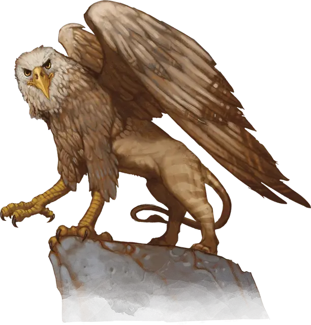

Грифон
Griffon
Большой Монстр, без мировоззрения

Класс Доспеха 12
Хиты 59 (7к10 + 21)
Скорость 30 футов, летая 80 футов
| мод | спас | ||
|---|---|---|---|
| СИЛ | 18 | +4 | +4 |
| ЛОВ | 15 | +2 | +2 |
| ТЕЛ | 16 | +3 | +3 |
| мод | спас | ||
|---|---|---|---|
| ИНТ | 2 | −4 | −4 |
| МДР | 13 | +1 | +1 |
| ХАР | 8 | −1 | −1 |
Навыки Восприятие +5
Чувства тёмное зрение 60 футов, пассивное Восприятие 15
Опасность 2 (450 опыта)
Бонус мастерства +2
Среда обитания Арктика, Горы, Луг, Побережье, Холмы
Особенности
Острое зрение. Грифон совершает с преимуществом проверки Мудрости (Восприятие), полагающиеся на зрение.
Действия
Мультиатака. Грифон совершает две атаки: одну клювом, и одну когтями.
Клюв. Рукопашная атака оружием: +6 к попаданию, досягаемость 5 футов, одна цель. Попадание: Колющий урон 8 (1к8 + 4).
Когти. Рукопашная атака оружием: +6 к попаданию, досягаемость 5 футов, одна цель. Попадание: Рубящий урон 11 (2к6 + 4).
Описание
Грифоны — свирепые крылатые хищники с мускулистыми телами львов и головами, передними лапами и крыльями орлов. Когда они нападают, грифоны смертоносны и быстры, как орлы, несмотря на то, что удары их мощны и грациозны, как у львов.
Пожиратели лошадей. Грифоны охотятся небольшими прайдами, летая над равнинами и лесами близ своих скал. Стадные животные и лошади — их любимая пища, однако они также охотятся и на гиппогрифов. Заметив лошадей, грифон кричит, чтобы предупредить своих гордых собратьев, которые мгновенно набрасываются на жертву.
Лошади страшатся пронзительного крика грифона, готовясь к кровавому бою, который неизбежно последует за ним. Грифон по возможности игнорирует всадника лошади, и наездники, бросившие своего скакуна, или погонщик, отпустивший пару лошадей, могут сбежать невредимыми, пока грифон атакует выбранную жертву. Всадник, который попытается защитить свою лошадь, навлекает на себя всю ярость сражающегося грифона.
Небожители. Грифоны располагают свои логова на вершинах скал, строя гнезда из палок, листьев и костей своей добычи. После того как грифон обосновался, он остается на выбранной территории, пока не закончится продовольствие.
Агрессивные собственники, грифоны вступают в жестокий воздушный бой за свою территорию, раздирая крылья вторгшихся, чтоб сбросить их на землю. Существ, которые пытаются вскарабкаться к логову, они сдирают со скалы и съедают или сбивают с большой высоты, чтоб те падали и разбивались.
Тренированные ездовые животные. Грифона, взращенного из яйца, можно натренировать для службы в качестве ездового животного. Однако такая тренировка опасна и занимает много времени и затрат (в основном на необходимую пищу). Опытные тренеры хорошо знакомы с легендарной свирепостью грифонов и, как правило, только они в состоянии безопасно растить этих существ.
После обучения грифон становится яростным и верным ездовым животным. Он связывает себя с одним хозяином на всю жизнь, сражаясь за него до самой смерти. Грифон сохраняет свой ненасытный аппетит к конине, и мудрый хозяин обеспечит ему другую добычу при прохождении через цивилизованные страны.